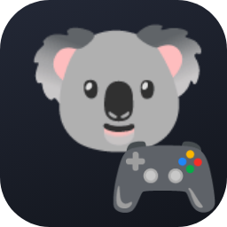

KoalaClips es una aplicación de escritorio para Windows hecha por el creador KoalaTTv. Toma la grabación de un directo de videojuegos —o el directo mientras pasa— encuentra los mejores momentos y los convierte en clips verticales 1080×1920 u horizontales 1920×1080, con subtítulos, listos para YouTube Shorts, Instagram Reels y TikTok. Todo se procesa en la computadora del creador.
YouTube ShortsInstagram ReelsTikTokOBSWindows
Una muestra de las opciones del programa. Toca los botones: así se ve lo que eliges en la app.
Elige cómo se acomoda el directo en el clip. En Cámara + juego recortas tu cámara y el juego como en OBS y los apilas; también puedes sacar el video completo con fondo difuminado, o un clip horizontal para YouTube.
Una IA escucha el audio en tu propia PC y escribe los subtítulos palabra por palabra, sincronizados con la voz. La palabra que suena se resalta. Después puedes corregir cualquier frase.
Mientras transmites, KoalaClips se conecta con OBS y guarda los últimos segundos. Cuando el volumen se dispara (gritos, risas, explosiones) o cuando dices «koala clips clipea eso», hace el clip solo. También funciona con el link de un directo de Twitch, Kick o YouTube.
Conecta tus cuentas con las pantallas oficiales de cada red. Puedes publicar clip por clip, o usar Exportar y publicar: eliges antes dónde, con qué descripción y privacidad, y cada clip se publica apenas termina. En TikTok también puedes mandarlo a tus borradores para terminarlo en la app.
Analiza el directo y propone los momentos más intensos (10, 15, 20, 25 o 30). Tú los revisas, los ajustas y eliges.
Escribe una palabra o frase y encuentra cada momento del directo en que se dijo, para clipear justo lo anterior.
Recorta la cámara y el gameplay libremente, como en OBS, con mejora de nitidez para que la cámara no pierda calidad.
Whisper en tu tarjeta gráfica: subtítulos palabra por palabra, con colores, tamaño y posición a tu gusto.
Con OBS o con el link de un directo: clipea por momentos fuertes, por tu frase o cuando el chat de Twitch explota. Con límite de clips.
Pausa y sigue el clip en otra parte del directo para juntar varios momentos en uno.
Exporta en H.264 con calidad alta y colores correctos para YouTube, Instagram y TikTok. Dos clips a la vez.
Marca muchos clips, elige las redes y vete a hacer otra cosa: se exportan y se publican solos.
Para clipear directos de otros creadores, hazlo solo con su permiso.
KoalaClips is a Windows desktop application made by the creator KoalaTTv. It takes a recorded gaming stream —or a live stream as it happens— finds the best moments and turns them into 1080×1920 vertical or 1920×1080 horizontal clips with AI subtitles, ready for YouTube Shorts, Instagram Reels and TikTok.
Videos are processed locally on the creator's computer. Nothing is posted without the creator's authorization. See our Privacy Policy and Terms of Service.